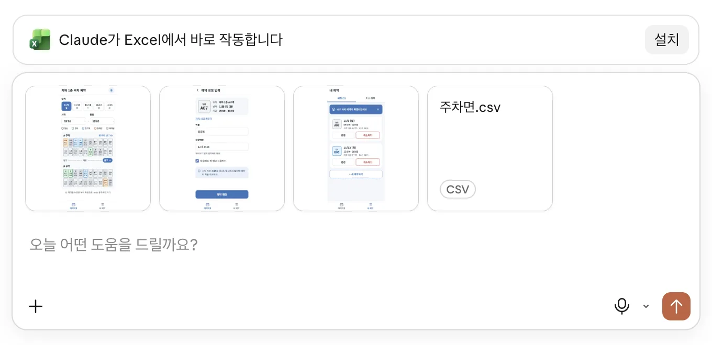
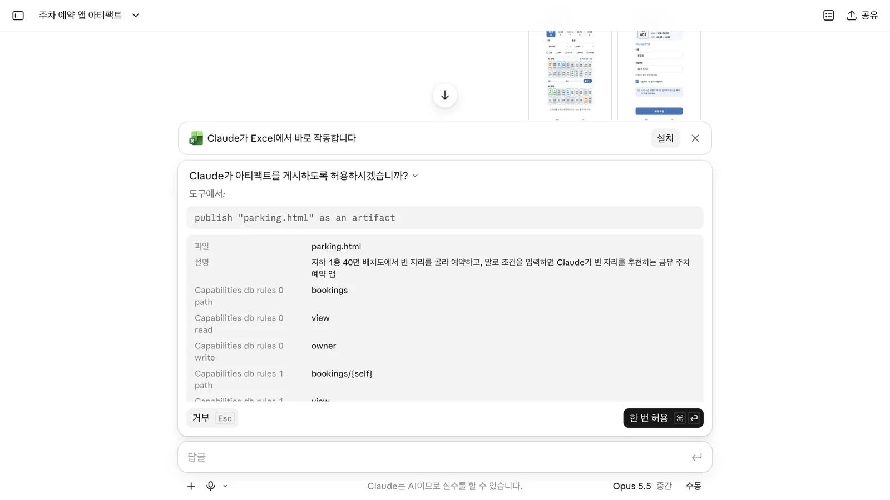
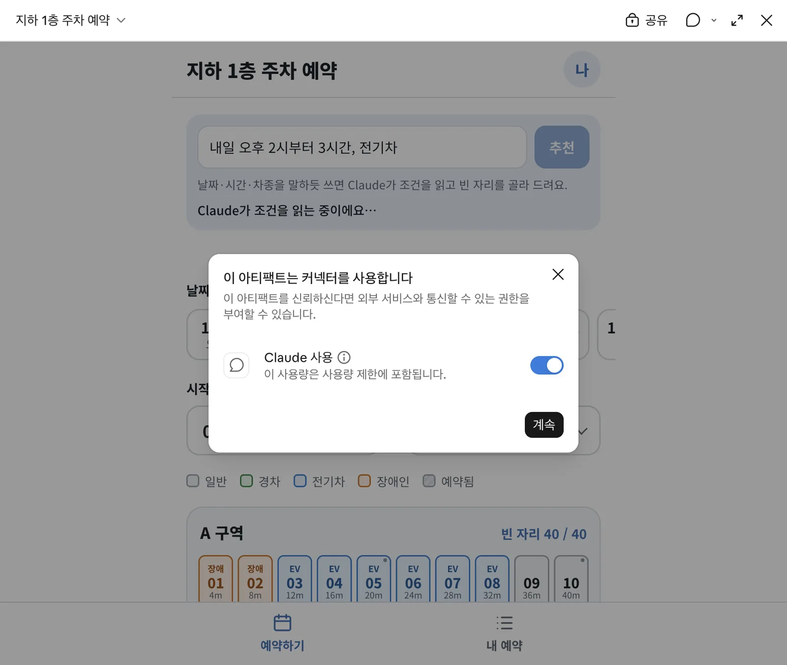
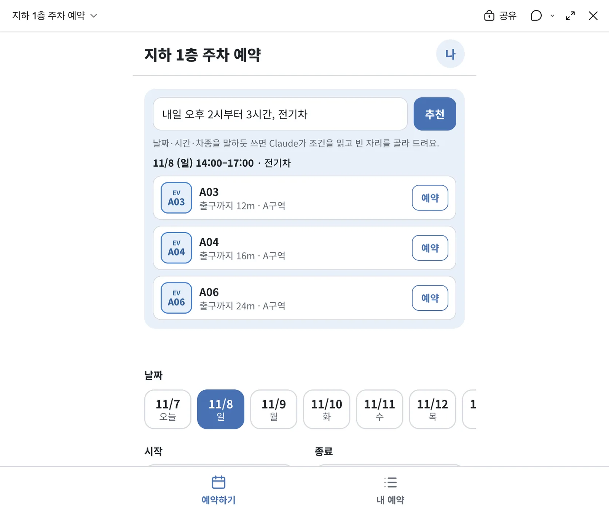
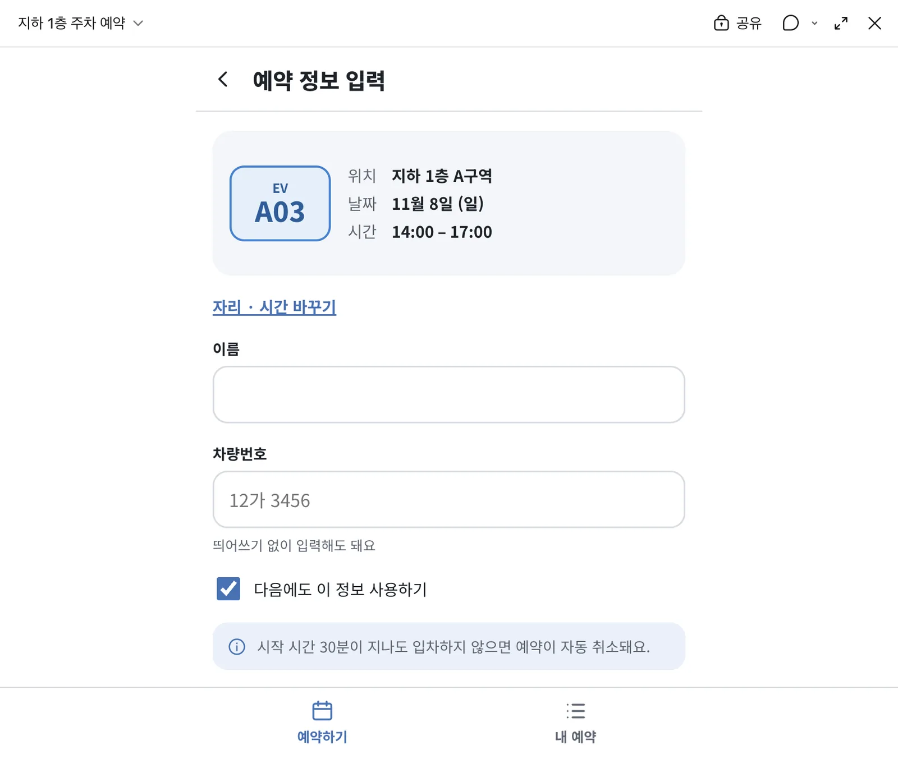
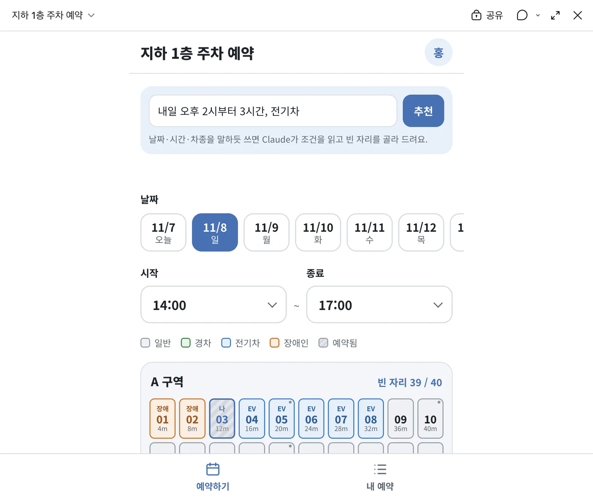
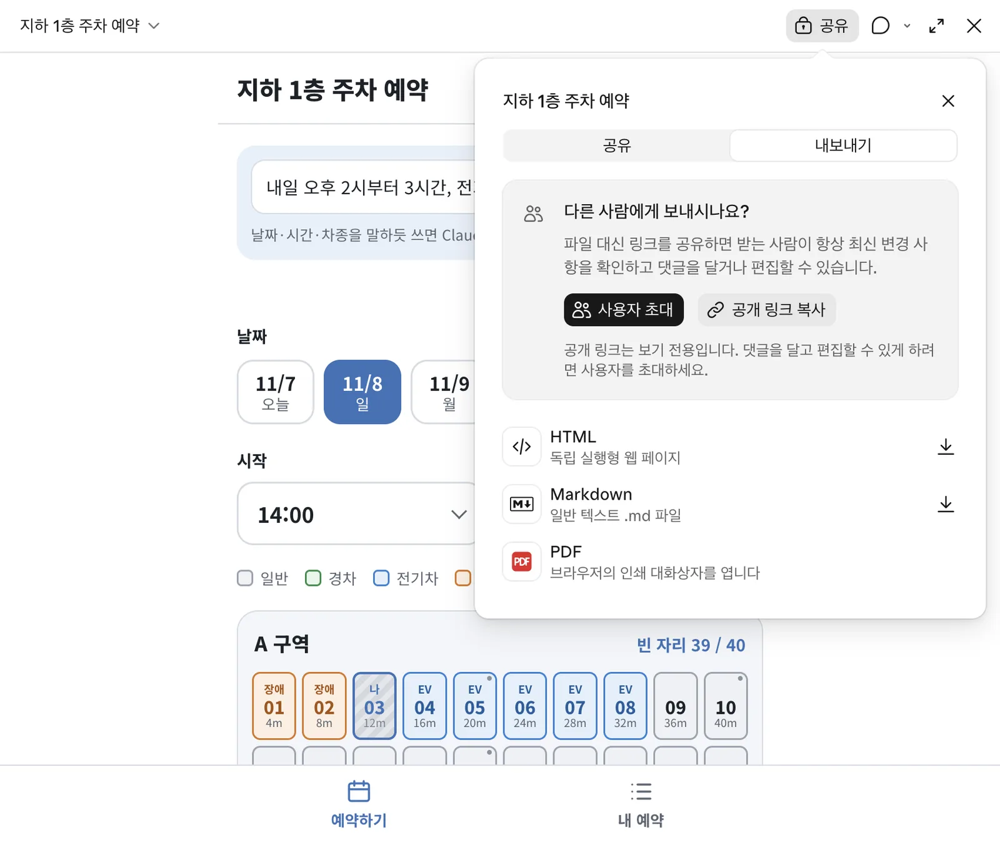

시안 PNG 3장과 주차면 CSV를 첨부해 공유 저장소와 AI 추천이 있는 예약 앱을 만듭니다. 선택한 자리·날짜·시간이 예약까지 이어지는지 직접 확인하고, 다음 구현에 사용할 HTML을 내보냅니다.
무엇을 · 왜#
이 장에서는 화면을 눌러 이동하는 프로토타입에 실제 데이터를 붙입니다. 디자인에서는 A20을 골라도 다음 화면에 A07이 나왔습니다. 이번에는 추천한 자리와 시간이 예약 정보에 이어지고, 확정 결과가 배치도에 반영되어야 합니다.
MVP는 필요한 동작을 우선 확인하는 앱입니다. 이번에는 Claude Artifacts의 공유 저장소와 AI 호출을 사용합니다. 동작하는 모습을 확인하되 서버의 동시성 검증이나 자체 로그인까지 끝났다고 보지는 않습니다.
따라 하기#
1. 시안과 자리 정보 첨부#
새 채팅을 열고 디자인에서 받은 PNG 3장과 주차면.csv를 첨부합니다. PNG는 화면의 모양과 흐름을, CSV는 40면의 자리 정보를 전달합니다. 디자인에서 표시한 출구 거리는 가정한 값이었으므로 데이터 파일을 함께 주는 것이 중요합니다.

확인할 것: 이미지 3장과 CSV가 모두 첨부되어 있는지 봅니다. 이번 단계에는 10월 예약 CSV를 첨부하지 않습니다.
2. P4 · 동작하는 앱 요청#
첨부 파일을 확인한 뒤 아래 요청을 보냅니다.
첨부한 디자인 시안대로 동작하는 주차 예약 앱을 아티팩트로 만들어 줘. 자리 정보는 주차면.csv(40면)를 쓰고, 예약은 모두가 함께 보는 저장소에 저장해서 다른 사람이 예약한 자리는 바로 예약할 수 없게 해 줘. 맨 위에는 '내일 오후 2시부터 3시간, 전기차'처럼 말하듯 입력하면 Claude가 조건을 읽고 빈 자리를 추천하는 입력창도 넣어 줘.
화면을 시안대로 만드는 것과 예약을 함께 보는 저장소에 넣는 것을 한 요청에 담았습니다. 말로 쓴 조건에서 날짜·시간·차량 유형을 읽는 입력창도 요청합니다.
3. 게시 허용 창 읽기#
권한을 수동으로 설정한 녹화에서는 「Claude가 아티팩트를 게시하도록 허용하시겠습니까?」라는 창이 나타났습니다. 요청 목록을 읽고 「한 번 허용」을 선택했습니다. 게시하더라도 당시 공개 범위는 「나만」이었습니다.

| 요청 목록의 항목 | 이번 앱에서의 뜻 |
|---|---|
publish "parking.html" |
만든 앱을 아티팩트로 게시합니다 |
bookings read view/write owner |
예약을 보는 범위와 소유자의 쓰기 권한을 정합니다 |
bookings/{self} write interact |
참여하는 사람이 자기 예약을 쓰도록 정합니다 |
sample |
AI 호출을 사용합니다 |
user |
사용자를 확인합니다 |
전체 규칙은 예약 현황을 함께 읽되 각자 자기 예약만 쓰도록 구성했습니다. 소유자는 정리할 수 있습니다. 권한 이름만 넘기지 말고 앱이 읽고 쓰는 대상이 무엇인지 확인하세요.
요청을 보낸 뒤 허용 창을 거쳐 완료되기까지 약 5분 50초가 걸렸습니다. 다른 사람도 예약하게 하려면 참여 권한(Contributor)으로 공유하세요. 보기만 가능한 링크와 예약에 참여하는 권한은 구분해야 합니다.
4. Claude의 완료 설명 확인#
앱이 나오면 설명을 아래까지 읽습니다. 이번 완료 설명은 구현 방식과 시안에서 달라진 점, 시험하지 못한 동작을 함께 다뤘습니다.
| 항목 | Claude가 설명한 내용 |
|---|---|
| 저장과 중복 방지 | 공유 저장소를 실시간으로 보고, 확정할 때 자리를 잠깐 잠근 뒤 최신 현황을 다시 확인 |
| 같은 사람의 예약 | 같은 시간에 두 자리를 잡지 못하도록 처리 |
| 수정 권한 | 각자 자기 예약만 수정, 소유자는 정리 가능 |
| 개인정보 | 이름·차량번호는 본인만 보는 곳에 따로 저장 |
| AI의 역할 | 문장의 조건만 해석하고 자리 선택은 앱이 현재 예약과 거리로 계산 |
| 시안과 다른 점 | 유형·거리는 CSV 기준, 날짜는 오늘부터 7일 |
| 시험하지 못한 것 | 페이지 안에서 실행되는 실제 저장·동시 예약·추천 호출 |
CSV를 따른 결과 A03~A08은 EV, B17~B20은 경차로 구성됐습니다. 설명에 적힌 구현 방식과 실제로 시험한 결과는 다릅니다. 이제 앱에서 추천과 예약을 직접 확인합니다. 동시 예약 차단은 Claude Code로 실제 구현에서 별도로 검증합니다.
녹화 중에는 「아티팩트를 불러오는 데 시간이 너무 오래 걸렸습니다」라는 안내가 나왔습니다. 당시 컴퓨터 부하가 높았고 재시도 후 약 60초 만에 열렸습니다. 같은 안내가 나오면 다시 시도하세요. 이 시간은 앱 생성에 걸린 시간과 구분합니다.
5. AI 추천과 첫 호출의 허락 창#
앱 맨 위의 입력창에 아래 문장을 넣고 「추천」을 누릅니다.
내일 오후 2시부터 3시간, 전기차
처음 호출할 때는 「이 아티팩트는 커넥터를 사용합니다 · Claude 사용」이라는 안내가 나타납니다. 「이 사용량은 사용량 제한에 포함됩니다」를 확인하고 「계속」을 선택합니다. 앞의 게시 허용 창이 앱의 기능 사용 권한을 다뤘다면, 이 창은 앱을 사용하는 사람의 Claude 호출에 관한 안내입니다.

11월 7일 실행에서는 「11/8 (일) 14:00–17:00 · 전기차」로 해석했습니다. 상대적인 날짜인 ‘내일’의 결과는 실습하는 날짜에 따라 달라집니다.
| 추천 자리 | 출구까지 거리 | 실행 결과에서 확인한 내용 |
|---|---|---|
| A03 | 12m | 첫 번째 추천에서 예약 진행 |
| A04 | 16m | 추천 목록에 표시 |
| A06 | 24m | 추천 목록에 표시 |
A05는 기둥 옆이라 제외됐습니다. AI가 읽어 낸 날짜·시간·유형을 먼저 보고 추천 결과를 확인하세요.

6. A03 예약해 보기#
A03의 「예약」을 누릅니다. 예약 정보 화면에도 A03·11월 8일·14:00–17:00이 그대로 표시됩니다. 어느 자리를 골라도 A07이던 디자인 단계와 달리 선택한 데이터가 이어집니다.

이름과 차량번호를 입력하고 「예약 확정」을 누릅니다. 「A03 자리 예약이 확정되었어요」와 예정 1건을 확인합니다. 배치도로 돌아가면 A03에 「나」가 표시되고 빈 자리는 39/40으로 바뀝니다.

확인할 것: 추천 조건, 예약 정보, 확정 안내, 배치도의 결과를 순서대로 비교합니다. 한 번 예약에 성공한 결과를 여러 사람의 동시 예약 검증으로 받아들이지 마세요.
MVP로 충분한 범위와 한계#
팀 안 수십 명이 시트 수준의 데이터를 다루고 링크로 나누는 도구라면 MVP에서 멈출 수 있습니다. 이는 이번에 수십 명의 부하 시험을 통과했다는 뜻이 아니라, 필요한 기능에 따라 멈출 단계를 판단하는 기준입니다.
| 이번 단계에서 얻은 것 | 실제 구현으로 넘길 이유 |
|---|---|
| 고른 자리와 시간의 전달, 예약 결과 반영 | 겹치는 예약을 서버와 DB에서 막아야 함 |
| 플랫폼을 통한 사용자 확인과 공유 | 사내 로그인과 본인 취소 규칙이 필요함 |
| Claude로 문장 조건 해석 | 서버에서 API 키와 호출을 관리해야 함 |
| 브라우저에서 예약 동작 확인 | 자동 테스트와 누가 무엇을 했는지 남기는 기록이 필요함 |
현재 중복 방지는 브라우저의 잠금에 기대고 있습니다. AI 호출은 보는 사람의 사용량에 포함되며, 로그인과 권한은 플랫폼 공유 권한에 묶입니다. 이런 부분을 직접 관리하려면 프로젝트 코드로 옮깁니다.
HTML 내보내기#
공유 → 내보내기 → HTML을 선택하고 mvp.html로 저장합니다. 일반 아티팩트 내보내기에는 HTML·Markdown·PDF가 보입니다. 이번에 받은 HTML은 42KB·656줄이며 claude.use(...) 호출을 포함합니다.

이 파일은 다음 구현이 화면과 흐름을 이어받는 자료입니다. HTML을 받았다고 플랫폼의 저장소와 AI 호출까지 사내 서버용으로 바뀌지는 않습니다. Claude Code로 실제 구현에서 시안 PNG와 함께 프로젝트에 넣고 이전 계획을 검토합니다.